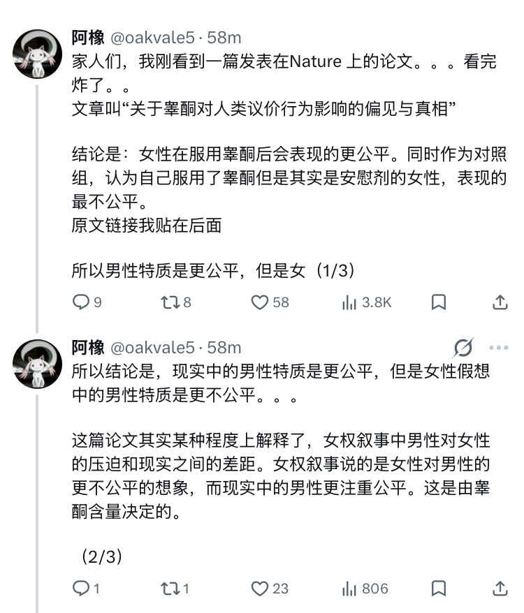

時璃風医詩🌈🏳️🌈
@hagishigure
感觉现在的研究都好狭隘。
应当额外设置男性舌下含服别孕烯醇酮及雌二醇组和女性含服别孕烯醇酮及睾酮组以及男性安慰剂组和男性舌下含服雌二醇组进行对照实验寻找p＜0.05的数据。
如果只有两组，那么我对这篇文章的评价是：研究生结课报告。
甚至连硕士论文都称不上。

Myfanwy
@myfanwy_wy
以下是对这篇研究的总结：
背景
睾酮（testosterone）在人的中枢神经系统中贯穿一生都存在。这种荷尔蒙并不只存在于男性体内，女性体内同样也有。
长期以来，一种较为常见的看法认为，睾酮会导致人类表现出反社会、自我中心，甚至更具攻击性的行为。这篇论文把这种观点称为 the folk hypothesis。 https://t.co/yC2BAycbZG